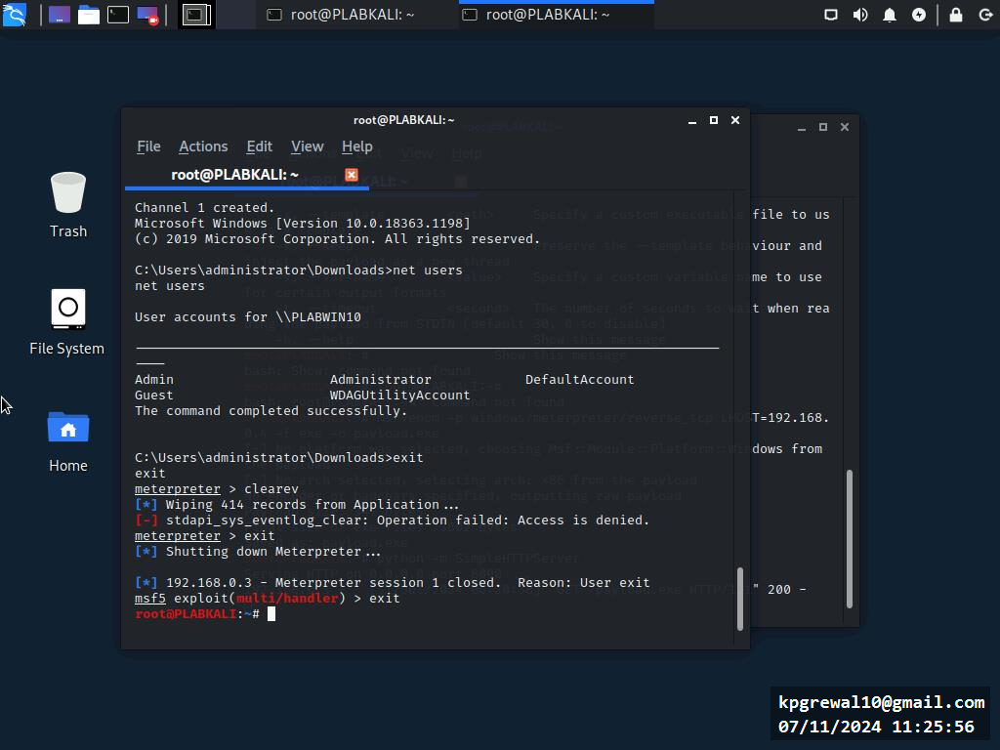
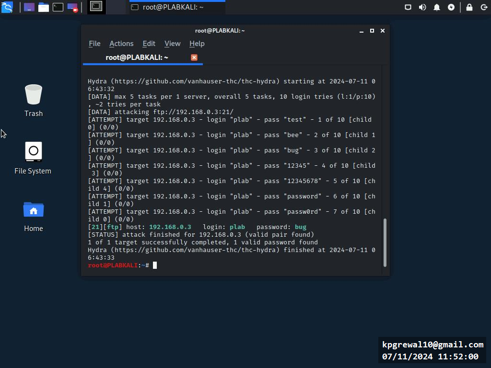
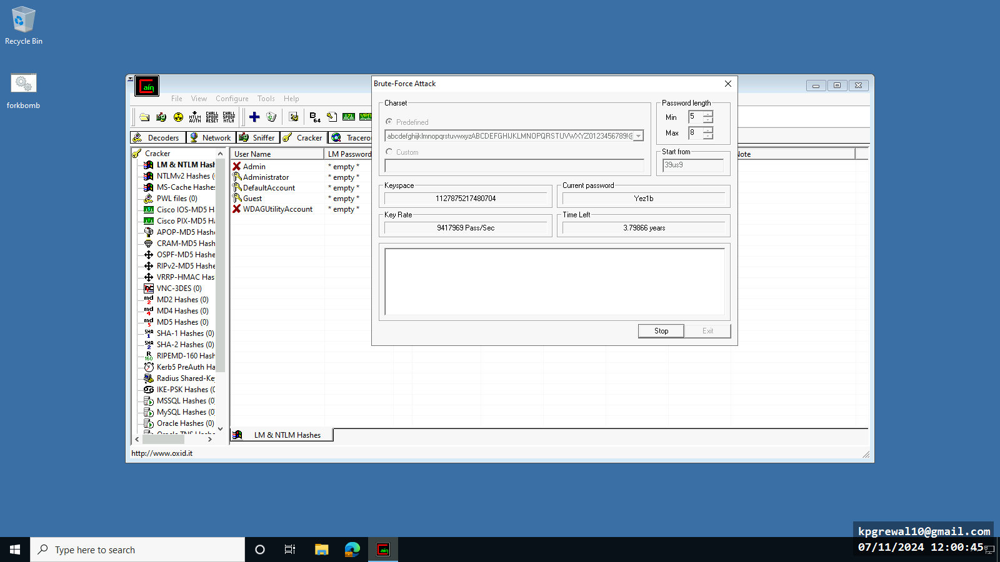
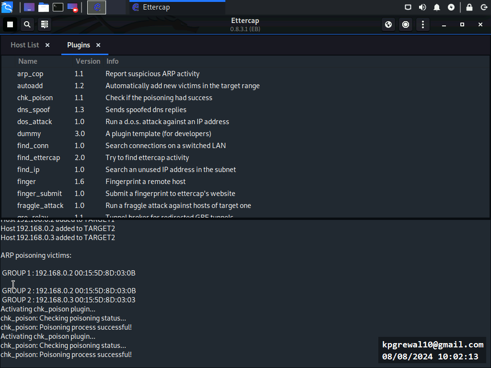
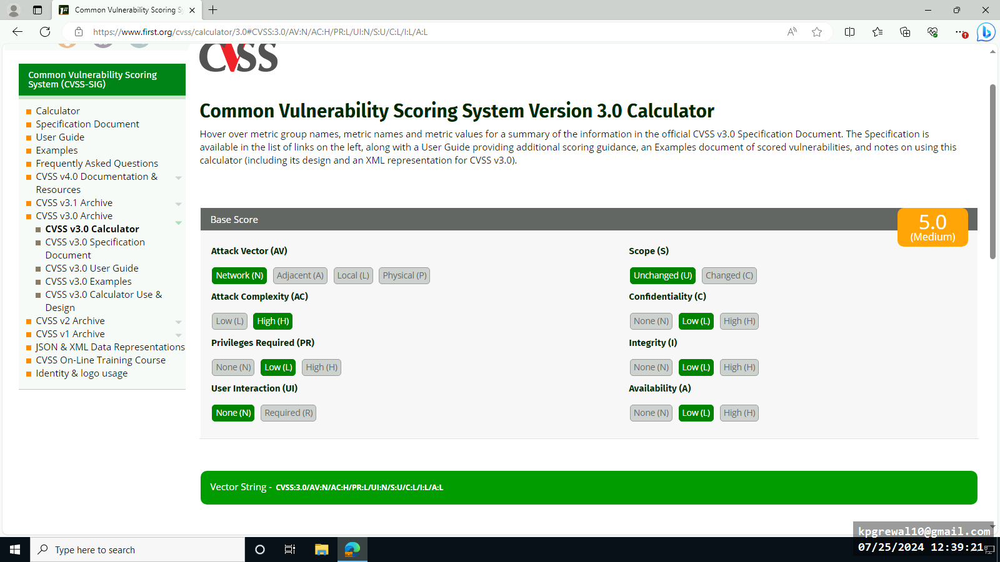
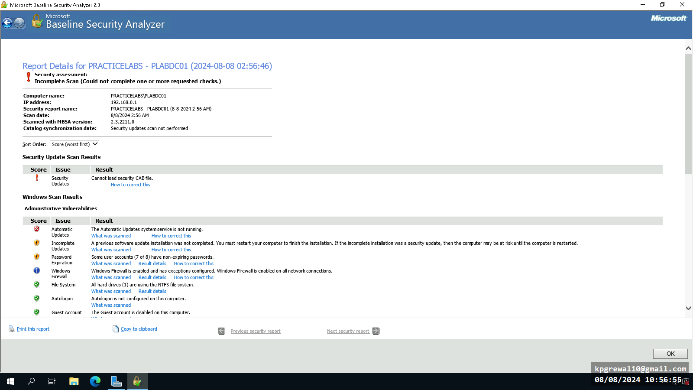

Password Policies
Successfully exploited system PLABDM01 through it's windows-based firewall using meterspreter. Used hydra to perform brute force attack and break password after identifying username.
Caption for Identify Attack 1
Caption for Identify Attack 2
Caption for Identify Attack 3
Caption for Identify Attack 4
Identifying Network Attacks
Used Talos Intelligence for international network reconnaissance. Proceeded to use ARP Poison attack (Ettercap) to replicate MAC address of another PC for usage.
Declared multiple policies for passwords on Windows
Set more complex policies such as expiration date, password expiration etc
Gathering Intelligence on Threat Actors and Vectors
Using CVSS calculations, successfully scored network vulnerabilities.
Declared multiple policies for passwords on Windows
Set more complex policies such as expiration date, password expiration etc
Determining Security Vulnerabilities
Successfully scanned and identified vulnerable ports using nmap (Kali Linux) and exploited the windows machine.
Declared multiple policies for passwords on Windows
Set more complex policies such as expiration date, password expiration etc